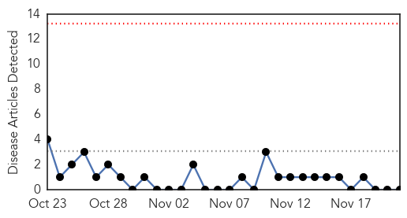
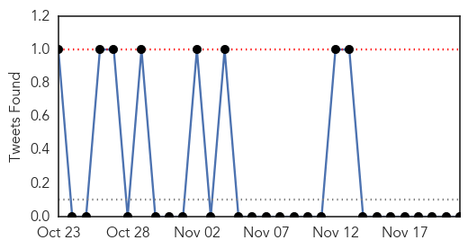
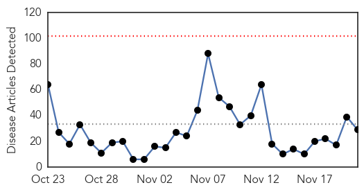
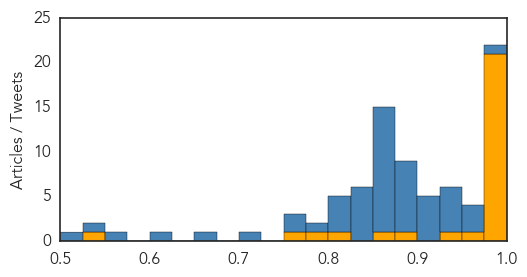

MERS
30-Day Web Trend
0 alerts, 0 warnings

30-Day Twitter Trend
0 alerts, 1 warnings

Article Locations

Article Confidences

Top Articles:
-
No articles found for Nov 21, 2015
Top Tweets:
-
No tweets found for Nov 21, 2015
Ebola
30-Day Web Trend
0 alerts, 0 warnings

30-Day Twitter Trend
7 alerts, 17 warnings

Article Locations

Article Confidences
Top Articles:
- 1.000
- Family struck with Ebola after Liberia declared free of virus twice
- 1.000
- Ebola Returns To Liberia After Being Declared Virus Free
- 1.000
- Family struck with Ebola after Liberia declared free of virus twice
- 1.000
- Three new Ebola cases confirmed in Liberia
- 1.000
- Three new confirmed cases in previously Ebola-free Liberia:
- 1.000
- Three family members in Liberia catch Ebola
- 1.000
- Sierra Leone declared Ebola-free by WHO
- 0.999
- National News - WYFF Home
- 0.999
- 3 new Ebola case in Liberia 2 months after all-clear
- 0.999
- Liberia confirms fresh cases
- 0.999
- 3 new confirmed cases in previously Ebola-free Liberia: WHO
- 0.999
- As Ebola stalks West Africa, medics fight mistrust, hostility
- 0.999
- Ebola case in Liberia confirmed by WHO
- 0.999
- Ebola Resurfaces In Liberia As Three People Test Positive For Deadly Virus
- 0.999
- Liberia confirms new Ebola cases after country declared virus free - Xinhua
- 0.999
- Fears of Deadly Ebola Virus Reportedly Resurface in Liberia
- 0.999
- New Ebola Cases Reported in Liberia, Two Months After All Clear Given
- 0.999
- New Ebola case confirmed in Liberia
- 0.997
- Ebola is back in Liberia, and officials are stumped about why
- 0.995
- Ebola cases in 3 family members confirmed in Liberia
- 0.981
- Liberian Government says “U.S. Case Shows Ebola remains international crisis”
- 0.954
- IntraHealthOPEN : As Spirits Rise in Sierra Leone, Technology Offers More than Ebola Recovery
- 0.938
- Warrior Baby: Last Ebola Patient Treated in Guinea
- 0.892
- As Bintou Keita bows out, President calls for enhanced community surveillance and monitoring
- 0.852
- Locking nurse given medal for Ebola work
- 0.819
- Nurse quarantined over Ebola fears sues Gov. Chris Christie
- 0.780
- West Point Residents, Soldiers, Police Clash Over Quarantine In Monrovia
- 0.764
- VP Foh Receives British Red Cross Director
- 0.546
- JIPMER to expand telemedicine network
Top Tweets:
- 1.000
- Ebola Virus - https://t.co/rjd72OgBE0 ebola
- 0.995
- Liberiya:Icyorezo cya Ebola kiracyahitana abantu - https://t.co/hSOUjMkZ4B ebola
- 0.995
- Ebola - https://t.co/dFuT9RlHZx ebola
- 0.994
- Health authorities: 3 new Ebola cases in Liberia - https://t.co/LXtKzyfz3Z ebola
- 0.993
- New cases of Ebola found in Liberia, health authorities say - https://t.co/0XAwuWFGL0 ebola
- 0.993
- Ebola Resurfaces In Liberia Again - https://t.co/PuV7QuGaOm ebola
- 0.992
- New Ebola cases confirmed - https://t.co/2QyyQK7545 ebola
- 0.992
- Ebola Resurfaces In Liberia As Three People Test Positive For Deadly Virus - https://t.co/CdtWy26hv7 ebola
- 0.990
- Ebola crisis: Liberia confirms fresh cases - https://t.co/FBroWhPUwr ebola
- 0.989
- Ebola returns to haunt Liberia - https://t.co/KXXydphwqw ebola
- 0.988
- New Ebola case hit Liberia after country declared virus free - https://t.co/C4xPdF43MW ebola
- 0.988
- Ebola Is Back in Liberia - https://t.co/2QrFUmWWLv ebola
- 0.987
- Three new Ebola cases confirmed in Liberia: WHO - https://t.co/J5nbINY5F8 ebola
- 0.983
- Three New Ebola cases confirmed in Liberia - https://t.co/5E35xtsrpj ebola
- 0.982
- Ebola cases in three family members confirmed in Liberia - https://t.co/RrvWAD2OR5 ebola
- 0.980
- Once again, Ebola reappears in Liberia - https://t.co/Y1qHFvfcsu ebola
- 0.974
- Household struck with Ebola after Liberia declared freed from virus twice - https://t.co/zWqg6Aw3ip ebola
- 0.974
- Ebola re-emerges in Liberia: three new cases announced - https://t.co/gfkIYevqCW ebola
- 0.973
- New Ebola cases hit Liberia months after nation declared free of virus - https://t.co/eFOsQWEHwu ebola
- 0.972
- No Longer Ebola-Free: Liberia Reports New Case - https://t.co/ol5Dl1K38r ebola
- 0.969
- New Ebola case found in Liberia - https://t.co/MEhwrRQVX8 ebola
- 0.968
- Warrior Baby: Last Ebola Patient Treated in Guinea - https://t.co/d1KPWFLSDd ebola
- 0.967
- Three new cases of Ebola appear in Liberia - https://t.co/sk78Mo8BPd ebola
- 0.966
- The real reason for distrust of Ebola efforts in Sierra Leone - https://t.co/38YUZ47U0w ebola
- 0.964
- Ebola Returns To Liberia After Being Declared Virus Free - https://t.co/iBRaPS8EOC ebola
- 0.963
- WHO identifies three new Ebola cases in Liberia - https://t.co/wv7NWJiH08 ebola
- 0.963
- 'A Good Warrior': Newborn Beats Ebola in Guinea - https://t.co/URJAZYiZSP ebola
- 0.962
- Sierra Leone declared Ebola-free by WHO - https://t.co/PBpZuF1xbm ebola
- 0.962
- Ebola vaccine shows strong response in clinical trails - https://t.co/t0uqFDzBeS ebola
- 0.961
- Three new confirmed cases in previously Ebola-free Liberia - https://t.co/RMyefI6Khk ebola
- 0.957
- New Ebola Case Recorded - https://t.co/oEwBpdH2m5 ebola
- 0.955
- Ebola vaccine shows strong response in clinical trails - International Business Times AU https://t.co/QLMRSgf116 ebola EVD
- 0.951
- One new confirmed case in previously Ebola-free Liberia - https://t.co/vy6MuGKBox ebola
- 0.951
- One new confirmed case in previously Ebola-free Liberia - https://t.co/RcY2tUOesb ebola
- 0.951
- One new confirmed case in previously Ebola-free Liberia - https://t.co/60AMvBtfUM ebola
- 0.951
- New Ebola Cases Reported in Liberia, Two Months After All Clear Given - https://t.co/1LUD3l6mNE ebola
- 0.950
- Ebola returns to Liberia months after nation declared free of virus - CNN International https://t.co/CA9kayDJun ebola EVD
- 0.949
- As Spirits Rise in Sierra Leone, Technology Offers More than Ebola - https://t.co/RQleDeSFdS ebola
- 0.948
- Sierra Leone Becomes Third Country to Adopt mHero in Ebola Recovery - https://t.co/v3Wiw6SA6w ebola
- 0.948
- New Ebola cases hit Liberia after country declared virus free https://t.co/9Vm9xSeLGp Africaagainstebola
- 0.946
- Three family members in Liberia catch Ebola - https://t.co/PGSpfJAKUp ebola
- 0.941
- Ebola returns to Liberia months after nation declared free of virus - https://t.co/RSDOxY8c1p ebola
- 0.938
- The real reason for distrust of Ebola efforts in Sierra Leone - Washington Post https://t.co/JqECq5ozOq ebola EVD
- 0.937
- Ebola Returns to Liberia, Country Was Believed to Be Virus - https://t.co/LUOBObmGun ebola
- 0.934
- Liberia suffers new Ebola cases, 2.5 months after being declared free of disease - https://t.co/4ciVG3980X ebola
- 0.934
- Family case cluster ends Liberia's Ebola-free status - https://t.co/EAilMWOeEg ebola
- 0.924
- Harvard University Online Course To Understand Ebola Outbreak - https://t.co/AJRVXahcBc ebola
- 0.920
- Ten-year-old being treated for case of Ebola in Liberia - https://t.co/YP2tq5UNJL ebola
- 0.915
- Reports probe semen Ebola viability, survivor eye problems - https://t.co/wlPuGRXQDt ebola
- 0.854
- Texas Turkey Farm Contaminated With Ebola, Over 250000 Holiday Turkeys Infected - https://t.co/5vIJ9TQe2s ebola
Showing top 50 tweets...